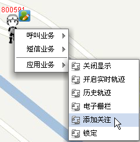
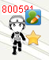
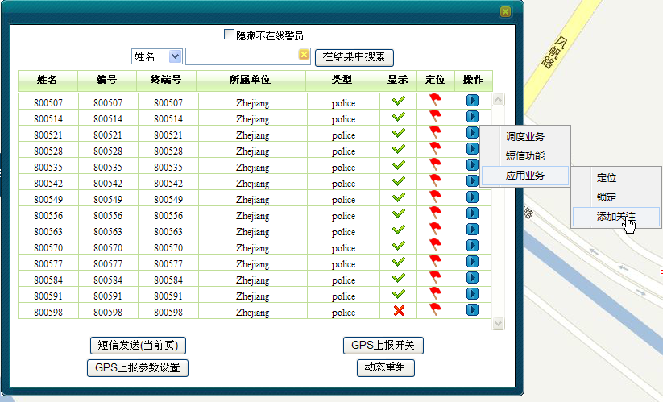
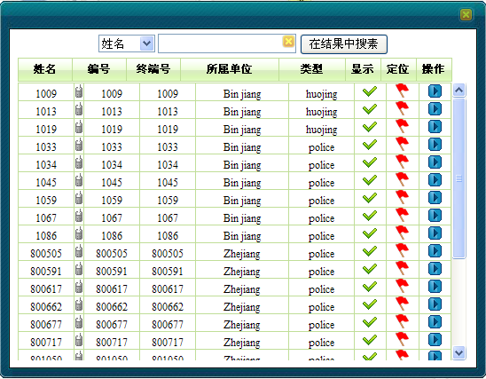

调度员可以控制是否添加移动用户的实时关注。被关注的移动用户的图片右上角会有星星的标记，并且能非常方便的在界面上进行统一的查看。
若某移动用户在地图上已显示，但是还没有被关注。
1）在地图上选中移动用户。
2）右键单击［应用业务/添加关注］，如下图1所示。

图1. 添加关注
3）关注成可功后，选中的移动用户右上角会有受到关注的标记。如下图2所示：

图2. 关注标记
4）要对已关注的移动用户取消关注，同理，先选中的移动用户，然后右键单击［应用业务/取消关注］。
1）可以通过查找用户、成员树、或者框选用户三种方式，弹出“移动用户列表”对话框。
2）单击“选中用户列表”中要关注的用户右侧三角按钮，选择［应用业务/添加关注］，如下图3所示。

图3. 对框选用户进行关注
3）被关注的移动用户图片右上角会有星星的标记。
1）在地图的任意位置点击右键，选择“关注列表”。界面会跳出受关注的所有移动用户列表。如下图4所示：

图4. 关注列表
2）关注列表同其它成员列表一样，可以对这些受关注移动用户进行显示、定位以及各项调度应用操作。
Copyright © 2012 Eastcom, Inc. All rights reserved. |
||